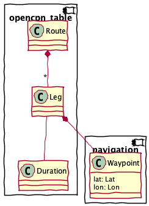

opencpn_table – OpenCPN Table Application¶
The opencpn_table application is used to do extract a useful CSV
formatted file from the OpenCPN planning display.
The display is a CSV file with a great deal of supplemental formatting. This application strips away the formatting so the data can be more easily loaded into a spreadsheet.
Here’s the structure of this application

This module includes several groups of components.
The Input Parsing group is the functions and classes that acquire input from the GPX or CSV file.
The Output Writing group is the functions to write the CSV result.
Finally, the Command-Line Interface components are used to build a proper command-line application.
Input Parsing¶
The data is a CSV file with a fixed set of columns.
"Leg", "To waypoint", "Distance", "Bearing",
"Latitude", "Longitude", "ETE", "ETA",
"Speed", "Next tide event", "Description", "Course"
Core objects¶
A Leg is the space between waypoints.
Rather than repeat each endpoint, only the ending
point is shown and the starting point is implied
by the previous leg’s ending point.
Map attribute values between OpenCPN CSV, something Pythonic, and a more generic CSV with less fancy formatting.
A Leg is the space between two Waypoints. One Waypoint is assumed (it’s the “current” waypoint.) The other is stated explicitly as the end-point for this leg.
This is a composite of a Waypoint plus some derived values.
Todo
Unify with
planning.SchedulePoint.Transform a line of CSV data from the input document into a Leg.
Emits a Leg as a dictionary. Uses the attr_names mapping to original CSV attribute names.
A Route is an ordered collection of Leg
instances with some overall summary data.
The overall Route. A number of pre-computed attributes are available, like the estimated duration and distance. The values of Speed and Departure are inputs, actually. The Name, Depart From, and Destination attributes are the most valuable.
Loads a Route from a given CSV file. This breaks the CSV into three parts:
The heading rows. These one or two columns.
A blank row.
The leg rows, which have a large number of columns.
- Parameters
path – the Path to a CSV file.
- Returns
Route
A Duration is a span of time, not an absolute point in time.
This is essentially similar to datetime.timedelta.
A duration in days, hours, minutes, and seconds.
We map between hours or minutes as float and (d, h, m, s) duration values.
To an extent, this is similar to
datetime.timedelta. It supports simple math to add and subtract durations.We need to also support the following for full rate-time-distance computations:
duration * float = float (rate*time = distance)
float * duration = float
float / duration = float (distance / time = rate)
duration / float = duration
There’s no trivial way to handle distance / rate = time. This must be done explicitly as Duration.fromfloat(minutes=60*distance/rate)
Dataclass provides hash, equality, and ordering for us.
Parses a duration field into days, hours, minutes, and seconds.
- Parameters
text – a string with digits and unit labels of “d”, “H”, “M”, or “S”.
- Returns
Duration
- Returns
a single float in days
- Returns
a single float in hours
- Returns
a single float in minutes
- Returns
a single int in seconds
Normalize to seconds.
Output Writing¶
We’re creating a CSV output file with de-formatted inputs. We maintain the column titles for simplistic compatibility with the source file.
Prints an HTML version of the supplied OpenCPN data.
- Parameters
route – a Route object.
Converts OpenCPN to a more spreadsheet friendly format. Writes to stdout.
- Parameters
route – a Route object.
Command-Line Interface¶
We generally use it like this:
python -m navtools.opencpn_table 'planned_route.csv'
Reads an OpenCPN route plan, and reformats it so it’s easier to load into a spreadsheet.